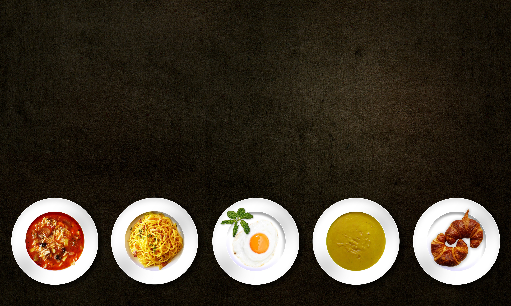

Cooking instructions
- Put in 500 g. of oil into hot pot
- After 2-3 minutes heating the oil, put in 2-3 pieces of onions and fry until golden color
- Take out fried golder onions

- Put in some salt and stir for 1 minute

- Put in some meat and fry for 5-6 minuts until cover of the meat is fried
- Add some spices such as Black pepper, Cucumin, and salt.
- Put in some fresh cuts of carrots in shape of slices and fry until they become soft
- Put in 500 g. of water and steer until water starts boiling.
- Stir consistency inside the pot, meat and carrots and some more water 200-300 g.
- Stir until water is boiled
- Make sure water is 2 inches above main consistency in the pot
- On the top of the main consistency, add 2 kg of rice and spread it so that it covers all consistency below water.
- Close the lit of the pot and put fire on middle level
- Let the rice steam for 20-30 mins
- And Voulia! You Polo dish is ready, and you call up your friends to the table! :)
- Bon Apetite!
Description of Why I love this dish Polo
Polo, looks so organic orange and warm color of taste, with it's beautifully cooked rice. Fried and steamed meat at the top, gives this dish visual effect and assurance of real joy for meat lovers. Also, would like to note that this dish can be cooked for vegeterians as well, they simply won't add meat, but eat and enjoy Polo itself by its each bite.
For your reference, I would like to share some images of ready Polo below, enjoy!


- 
Also, down below I would like to share some other recipees by other Master Chefs like me :)